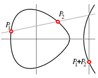

| Finding primes & proving
primality 4.2: Using elliptic curves and the ECPP test |
 |
| Home > Primality Proving > Chapter Four > Elliptic Curves |
|
What is the next big leap in primality proving? To switch from Galois groups to some other, perhaps easier to work with groups--in this case the points on Elliptic Curves modulo n. An Elliptic curve is a curve of genus one, that is a curve that can be written in the form
E(a,b) : y2 = x3 + ax + b (with 4a3 + 27b2 not zero)
They are called "elliptic" because these equations first arose in the calculation of the arc-lengths of ellipses.
The rational points on such a curve form a group with addition defined using the "chord and tangent method:" That is, if the two points P1 and P2 are rational (have rational coefficients), then the line through P1 and P2 intersects the curve again in a third rational point which we call -(P1+P2) (the negative is to make the associative law work out). Reflect through the x-axis to get P1+P2. (If P1 and P2 are not distinct, then use the tangent line at P1.)
If we then reduce this group modulo a prime p we get a small group E(a,b)/p whose size can be used in roughly the way we use the size of (Z/pZ)* in the first of the classical tests. Let |E| be the order (the size) of the group E:
Theorem: |E(a,b)/p| lies in the interval (p+1-2sqrt(p),p+1+2sqrt(p)) and the orders are fairly uniformly distributed (as we vary a and b).Obviously we are again getting out of our depth, but perhaps you see that we now have replaced the groups of order n-1 and n+1 used in the classical test with a far larger range of group sizes. We can keep switching curves until we find one we can "factor." This improvement comes at the cost of having to do a great deal of work to find the actual size of these groups.
About 1986, S. Goldwasser & J. Kilian [GK86] and A. O. L. Atkin [Atkin86] introduced elliptic curve primality proving methods. Atkin's method, ECPP, was implemented by a number of mathematicians, including Atkin & Morain [AM93]. François Morain's C-code (discussed in [AM93]) is available on the web for many platforms. For Windows based platforms the Primo implementation is easier to use.
Heuristically, the best version of ECPP is O((log n)4+eps) for some eps > 0 [LL90] (see also D. J. Bernstein's page http://cr.yp.to/primetests.html). It has been proven to be polynomial time for almost all choices of inputs.
|